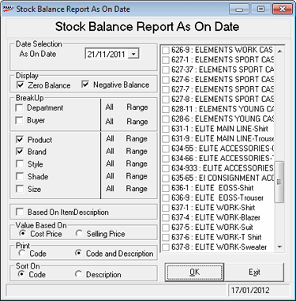

The Stock Balance as on Date report provides stock information on the quantity and stock value of items as on a selected date. It is generated based on the selected item classifications. Cost price or selling price can be selected as the stock valuation criterion. The report can be grouped on the item classification and super classifications.
How to reach: Reports > Stock > Balance as on Date
The Stock Balance Report As On Date window is displayed.

Date Selection: Select the date as on which stock balance needs to be reported.
BreakUp: Select Department and/ or Buyer to group the report based on one or both of these classifications. Choose All or Range. If you have selected Range, select the required values from the list.
Select Product, Brand, Style, Shade and/ or Size to filter the report. Choose All or Range. If you have selected Range, select the required values from the list.
Based On Item Description: Select if you want to view item description in the report.
Value Based On: Select Cost Price or Selling Price to display cost prices or selling prices in the report.
Note: The Cost Price can be hidden by the administrator based on user-wise restriction.
Print: Select Code or Code and Description to specify the values to be printed in the report.
Sort On: Select to sort on Code or Description.
Note: This report will display batch, grade and location details if it is enabled.